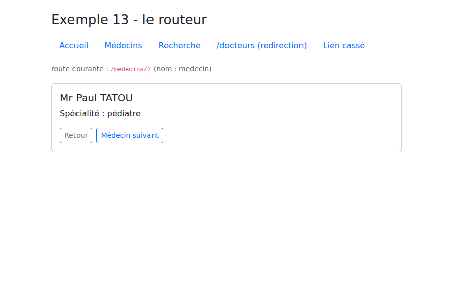
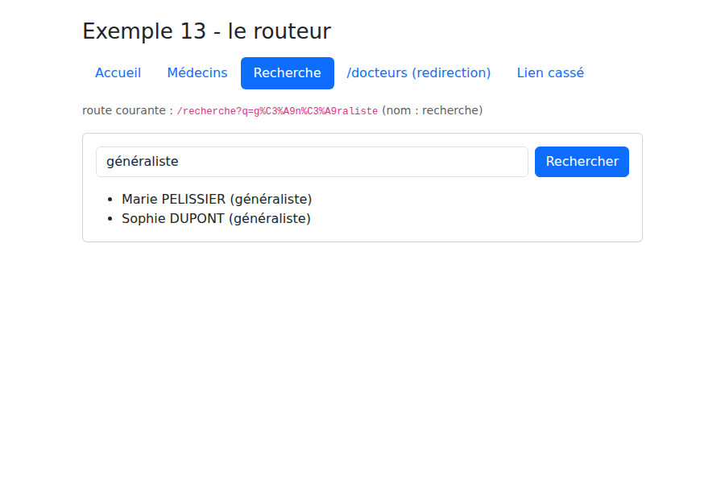
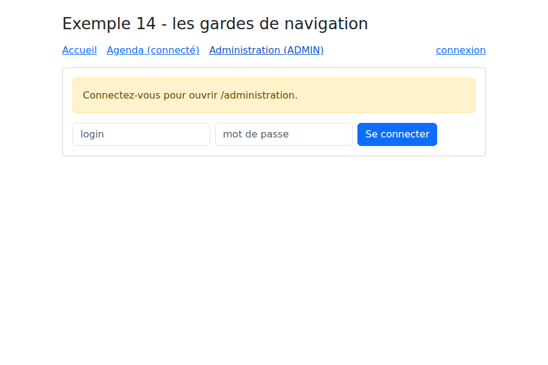

4. Le routage
Une application [Vue.js] ne charge qu'une page HTML. Pourtant, l'application [RdvMedecins] a une page de connexion, une page d'agenda, une page « Mon espace »... Chacune a son adresse ([/login], [/agenda], [/mon-espace]), qu'on peut mettre en favori, et les boutons Précédent / Suivant du navigateur fonctionnent. C'est le travail du routeur, la bibliothèque [vue-router].
4.1. Exemple 13 : le routeur
Le routeur est ajouté à l'application dans [main.ts] :
| // =========================================================================
// 13-routeur/src/main.ts
// -------------------------------------------------------------------------
// app.use(router) : on ajoute le routeur à l'application. Les composants
// <RouterLink> et <RouterView> deviennent alors utilisables partout.
// =========================================================================
import { createApp } from 'vue';
import 'bootstrap/dist/css/bootstrap.min.css';
import App from './App.vue';
import { router } from './router';
createApp(App).use(router).mount('#app');
|
- ligne 13 : [app.use(...)] installe une extension ([plugin]) : les composants [<RouterLink>] et [<RouterView>], et les fonctions [useRoute()] et [useRouter()], deviennent utilisables partout.
Les données de l'exemple, « en dur » :
| // des données "en dur", pour ne pas dépendre d'un serveur dans cet exemple
export interface Medecin {
id: number;
titre: string;
prenom: string;
nom: string;
specialite: string;
}
export const MEDECINS: Medecin[] = [
{ id: 1, titre: 'Mme', prenom: 'Marie', nom: 'PELISSIER', specialite: 'généraliste' },
{ id: 2, titre: 'Mr', prenom: 'Paul', nom: 'TATOU', specialite: 'pédiatre' },
{ id: 3, titre: 'Melle', prenom: 'Sophie', nom: 'DUPONT', specialite: 'généraliste' },
];
|
Les routes :
| // =========================================================================
// 13-routeur/src/router.ts - les ROUTES de l'application
// -------------------------------------------------------------------------
// Une application Vue.js est une application à page unique (SPA : Single
// Page Application) : le navigateur ne charge qu'UNE page HTML. Quand on
// clique sur un lien interne, aucune requête n'est envoyée au serveur :
// le routeur change l'adresse affichée par le navigateur, et remplace le
// composant affiché dans <RouterView>.
//
// Une route associe un CHEMIN à un COMPOSANT (qu'on appelle une "vue", au
// sens d'un écran de l'application) :
// '/medecins/:id' :id est un paramètre (/medecins/2 -> id = "2") ;
// '/:pathMatch(.*)*' n'importe quel chemin : la page "introuvable"
// (la route la plus précise l'emporte toujours).
//
// createWebHashHistory : les adresses ont la forme /13-routeur/#/medecins/2.
// Tout ce qui suit le # reste dans le navigateur : recharger la page (F5)
// redemande toujours /13-routeur/, qui existe. C'est le mode le plus simple
// quand le serveur ne sait rien du routeur - ici, le serveur de Vite, qui
// sert vingt exemples à la fois. L'étude de cas utilisera des adresses
// "propres" (createWebHistory : /agenda, /medecins...).
// =========================================================================
import { createRouter, createWebHashHistory } from 'vue-router';
import Accueil from './views/Accueil.vue';
import ListeMedecins from './views/ListeMedecins.vue';
import DetailMedecin from './views/DetailMedecin.vue';
import Recherche from './views/Recherche.vue';
import PageIntrouvable from './views/PageIntrouvable.vue';
export const router = createRouter({
history: createWebHashHistory(),
routes: [
{ path: '/', name: 'accueil', component: Accueil },
{ path: '/medecins', name: 'medecins', component: ListeMedecins },
// props: true -> le paramètre :id est passé au composant comme une PROP
// (le composant ne dépend alors plus du routeur : plus facile à réutiliser)
{ path: '/medecins/:id', name: 'medecin', component: DetailMedecin, props: true },
{ path: '/recherche', name: 'recherche', component: Recherche },
// une redirection : l'ancienne adresse mène à la nouvelle
{ path: '/docteurs', redirect: '/medecins' },
{ path: '/:pathMatch(.*)*', name: 'introuvable', component: PageIntrouvable },
],
});
|
- lignes 33-43 : une route associe un chemin à un composant, qu'on appelle une « vue » (au sens d'un écran de l'application ; rien à voir avec les vues [Handlebars] du cours [NestJS], sinon le rôle) ;
- ligne 34 : une route peut avoir un nom, plus stable que son chemin pour fabriquer des liens ;
- ligne 38 : [:id] est un paramètre : [/medecins/2] affiche [DetailMedecin] avec [id = "2"]. L'option [props: true] le passe au composant comme une prop : le composant ne dépend alors plus du routeur ;
- ligne 41 : une redirection : l'adresse [/docteurs] mène à [/medecins] ;
- ligne 42 : un chemin quelconque : la page « introuvable ». Elle ne reçoit que les adresses qu'aucune autre route ne reconnaît : [vue-router] classe les routes selon la précision de leur chemin, la plus précise l'emporte (on la place quand même en dernier, par lisibilité) ;
- ligne 32 : le mode d'historique. Avec [createWebHashHistory], les adresses ont la forme [/13-routeur/#/medecins/2] : tout ce qui suit le [#] n'est jamais envoyé au serveur, et recharger la page (F5) demande toujours [/13-routeur/], qui existe. C'est le mode le plus simple quand le serveur ne connaît pas les routes du client, ce qui est le cas du serveur de [Vite], qui sert vingt exemples à la fois. L'étude de cas utilisera [createWebHistory] et des adresses « propres » ([/agenda]), ce qui demande un petit effort au serveur.
La « coquille » de l'application :
| <!--
=========================================================================
13-routeur/src/App.vue - la "coquille" de l'application
-------------------------------------------------------------------------
- <RouterLink to="..."> : un lien interne. Il produit une balise <a>,
mais un clic ne recharge pas la page : c'est le routeur qui agit.
Le lien de la page affichée reçoit la classe "router-link-active"
(ici remplacée par "active", celle de Bootstrap) ;
- <RouterView /> : l'emplacement où s'affiche le composant de la route
courante.
=========================================================================
-->
<script setup lang="ts">
import { RouterLink, RouterView, useRoute } from 'vue-router';
// useRoute() : la route courante (chemin, paramètres, query...), réactive
const route = useRoute();
</script>
<template>
<div class="container py-4">
<h1 class="h3 mb-3">Exemple 13 - le routeur</h1>
<nav class="nav nav-pills mb-3">
<RouterLink class="nav-link" active-class="active" to="/">Accueil</RouterLink>
<!-- to peut être un objet : le NOM de la route plutôt que son chemin -->
<RouterLink class="nav-link" active-class="active" :to="{ name: 'medecins' }">Médecins</RouterLink>
<RouterLink class="nav-link" active-class="active" :to="{ name: 'recherche', query: { q: 'généraliste' } }">Recherche</RouterLink>
<RouterLink class="nav-link" to="/docteurs">/docteurs (redirection)</RouterLink>
<RouterLink class="nav-link" to="/page-inconnue">Lien cassé</RouterLink>
</nav>
<p class="small text-muted">route courante : <code>{{ route.fullPath }}</code> (nom : {{ String(route.name) }})</p>
<div class="card p-3">
<RouterView />
</div>
</div>
</template>
|
- ligne 17 : la route courante (chemin, paramètres, [query]...), réactive : le template se met à jour quand elle change ;
- ligne 24 : [<RouterLink>] produit une balise [<a>], mais un clic ne recharge pas la page : c'est le routeur qui change l'adresse et le composant affiché. Le lien de la page courante reçoit la classe indiquée par [active-class] (ici [active], celle de [Bootstrap]) ;
- ligne 26 : la destination peut être un objet : le nom de la route plutôt que son chemin ;
- ligne 27 : un lien avec des paramètres de requête : [/recherche?q=généraliste] ;
- ligne 33 : l'emplacement où s'affiche le composant de la route courante.
Les pages. La liste des médecins fabrique des liens à paramètre :
| <!-- 13-routeur/src/views/ListeMedecins.vue - des liens avec paramètre -->
<script setup lang="ts">
import { RouterLink } from 'vue-router';
import { MEDECINS } from '../donnees';
</script>
<template>
<ul class="mb-0">
<li v-for="m in MEDECINS" :key="m.id">
<!-- { name, params } : le routeur fabrique lui-même l'adresse /medecins/2 -->
<RouterLink :to="{ name: 'medecin', params: { id: m.id } }">{{ m.titre }} {{ m.prenom }} {{ m.nom }}</RouterLink>
</li>
</ul>
</template>
|
- ligne 11 : le routeur construit lui-même l'adresse [/medecins/2] à partir du nom de la route et de ses paramètres.
La page d'un médecin :
| <!--
13-routeur/src/views/DetailMedecin.vue - une page à paramètre
L'id arrive en PROP (props: true dans router.ts), sous forme de chaîne.
useRouter() donne le routeur lui-même, pour naviguer PAR LE CODE.
-->
<script setup lang="ts">
import { computed } from 'vue';
import { useRouter } from 'vue-router';
import { MEDECINS } from '../donnees';
const props = defineProps<{ id: string }>();
const router = useRouter();
// computed : si l'on passe de /medecins/1 à /medecins/2, Vue RÉUTILISE le
// même composant et change seulement la prop - le computed suit
const medecin = computed(() => MEDECINS.find((m) => m.id === Number(props.id)) ?? null);
const suivant = computed(() => (Number(props.id) % MEDECINS.length) + 1);
</script>
<template>
<div v-if="medecin">
<h2 class="h5">{{ medecin.titre }} {{ medecin.prenom }} {{ medecin.nom }}</h2>
<p>Spécialité : {{ medecin.specialite }}</p>
<div class="d-flex gap-2">
<!-- navigation par le code : router.push(...) ou router.back() -->
<button class="btn btn-sm btn-outline-secondary" @click="router.back()">Retour</button>
<button class="btn btn-sm btn-outline-primary" @click="router.push({ name: 'medecin', params: { id: suivant } })">Médecin suivant</button>
</div>
</div>
<p v-else class="text-danger mb-0">Le médecin n° {{ id }} n'existe pas.</p>
</template>
|
- ligne 11 : le paramètre [:id] arrive comme une prop, sous forme de chaîne ;
- ligne 12 : le routeur lui-même, pour naviguer par le code ;
- ligne 16 : passer de [/medecins/1] à [/medecins/2] ne recrée pas le composant : [Vue.js] réutilise celui qui est affiché et change seulement sa prop. Un [computed] suit ce changement ; du code placé dans [onMounted] ne serait, lui, exécuté qu'une fois ;
- ligne 26 et ligne 27 : revenir à la page précédente, aller à une autre page.

La recherche est une page entièrement décrite par son URL, comme le formulaire GET du cours [NestJS] :
| <!--
13-routeur/src/views/Recherche.vue - une page pilotée par la QUERY de l'URL
(/recherche?q=pédiatre). Comme avec le formulaire GET du cours NestJS, la
page est entièrement décrite par son adresse : on peut la mettre en
favori, la recharger, revenir en arrière.
-->
<script setup lang="ts">
import { computed, ref, watch } from 'vue';
import { useRoute, useRouter } from 'vue-router';
import { MEDECINS } from '../donnees';
const route = useRoute();
const router = useRouter();
// le champ de saisie démarre avec la valeur de l'URL...
const saisie = ref(String(route.query.q ?? ''));
// ... et suit l'URL si elle change (bouton Précédent par exemple)
watch(() => route.query.q, (q) => (saisie.value = String(q ?? '')));
const resultats = computed(() => {
const q = String(route.query.q ?? '').toLowerCase();
return MEDECINS.filter((m) => `${m.prenom} ${m.nom} ${m.specialite}`.toLowerCase().includes(q));
});
function rechercher(): void {
// on change l'URL ; l'affichage suit l'URL (computed ci-dessus)
router.push({ name: 'recherche', query: { q: saisie.value } });
}
</script>
<template>
<form class="d-flex gap-2 mb-3" @submit.prevent="rechercher">
<input v-model="saisie" class="form-control" placeholder="nom ou spécialité">
<button class="btn btn-primary">Rechercher</button>
</form>
<ul class="mb-0">
<li v-for="m in resultats" :key="m.id">{{ m.prenom }} {{ m.nom }} ({{ m.specialite }})</li>
</ul>
</template>
|
- ligne 16 : [route.query] contient les paramètres de l'URL ([?q=...]) ;
- ligne 18 : si l'URL change (bouton Précédent), le champ suit ;
- ligne 20 : les résultats dépendent de l'URL, pas du champ ;
- ligne 27 : rechercher, c'est changer l'URL ; l'affichage suit. On peut mettre la recherche en favori, la recharger, revenir en arrière.

4.2. Exemple 14 : les gardes de navigation
Certaines pages exigent d'être connecté, d'autres un rôle particulier. Cet exemple simule une connexion, sans serveur :
| // =========================================================================
// 14-gardes/src/session.ts - une session SIMULÉE (sans serveur)
// -------------------------------------------------------------------------
// L'utilisateur connecté, dans une ref déclarée au niveau du MODULE : tous
// les fichiers qui importent ce module partagent la même. (L'exemple 15 fera
// la même chose, en mieux, avec Pinia ; l'exemple 18 avec un vrai serveur.)
// =========================================================================
import { ref } from 'vue';
export type Role = 'ADMIN' | 'DOCTOR' | 'USER';
export interface Utilisateur {
login: string;
role: Role;
}
export const utilisateur = ref<Utilisateur | null>(null);
// trois comptes "en dur" (mot de passe = login)
const COMPTES: Record<string, Role> = { admin: 'ADMIN', pelissier: 'DOCTOR', martin: 'USER' };
export function connecter(login: string, password: string): boolean {
const role = COMPTES[login];
if (role === undefined || password !== login) {
return false;
}
utilisateur.value = { login, role };
return true;
}
export function deconnecter(): void {
utilisateur.value = null;
}
|
- ligne 18 : une [ref] déclarée au niveau du module : tous les fichiers qui importent [session.ts] partagent la même.
Les routes, et leur garde :
| // =========================================================================
// 14-gardes/src/router.ts - des routes PROTÉGÉES
// -------------------------------------------------------------------------
// meta : des informations libres attachées à une route. Ici :
// - meta.connexion : la page exige d'être connecté ;
// - meta.roles : les rôles autorisés (absent = tous).
//
// router.beforeEach(...) : un GARDE DE NAVIGATION, exécuté avant CHAQUE
// changement de page. Il renvoie :
// - true : la navigation continue ;
// - une autre adresse : redirection ;
// C'est l'équivalent, côté client, des gardes NestJS (JwtAuthGuard,
// RolesGuard) - avec une différence FONDAMENTALE : un garde du client n'est
// qu'un confort. Le code du client est entre les mains de l'utilisateur, qui
// peut le modifier à volonté. La vraie protection des données reste celle
// du SERVEUR (cf. chapitre sur la boîte noire).
// =========================================================================
import { createRouter, createWebHashHistory } from 'vue-router';
import { utilisateur, type Role } from './session';
import Accueil from './views/Accueil.vue';
import Connexion from './views/Connexion.vue';
import Agenda from './views/Agenda.vue';
// on déclare à TypeScript les propriétés de meta que nous utilisons
declare module 'vue-router' {
interface RouteMeta {
connexion?: boolean;
roles?: Role[];
}
}
export const router = createRouter({
history: createWebHashHistory(),
routes: [
{ path: '/', component: Accueil },
{ path: '/connexion', component: Connexion },
{ path: '/agenda', component: Agenda, meta: { connexion: true } },
{
path: '/administration',
// chargement DIFFÉRÉ : le code de ce composant n'est téléchargé que
// lors de la première visite de la page (Vite en fait un fichier à part)
component: () => import('./views/Administration.vue'),
meta: { connexion: true, roles: ['ADMIN'] },
},
],
});
router.beforeEach((vers) => {
if (vers.meta.connexion && utilisateur.value === null) {
// pas connecté : à la page de connexion, en retenant où l'on voulait aller
return { path: '/connexion', query: { redirect: vers.fullPath } };
}
if (vers.meta.roles && utilisateur.value && !vers.meta.roles.includes(utilisateur.value.role)) {
// connecté, mais pas avec le bon rôle : retour à l'accueil, avec un motif
return { path: '/', query: { refus: vers.fullPath } };
}
return true;
});
|
- lignes 26-31 : on déclare à [TypeScript] les propriétés que nous rangerons dans le champ [meta] des routes. [meta] accepte des informations libres ; les déclarer permet de les utiliser sans transtypage ;
- ligne 38 : la page exige d'être connecté ;
- ligne 43 : un chargement différé : le code de ce composant n'est téléchargé qu'à la première visite de la page. [Vite] en fait un fichier à part. Une application ne charge ainsi au démarrage que ce dont elle a besoin ;
- lignes 49-59 : un garde de navigation, exécuté avant CHAQUE changement de page. Il renvoie [true] pour laisser passer, ou une autre adresse pour rediriger :
- pas connecté : on redirige vers [/connexion], en retenant la page demandée dans le paramètre [redirect] ;
- connecté sans le bon rôle : retour à l'accueil, avec le motif du refus.
La page de connexion renvoie l'utilisateur là où il voulait aller :
| <!--
14-gardes/src/views/Connexion.vue
Après la connexion, on renvoie l'utilisateur à la page qu'il voulait
ouvrir (paramètre ?redirect=... déposé par le garde), ou à l'accueil.
-->
<script setup lang="ts">
import { ref } from 'vue';
import { useRoute, useRouter } from 'vue-router';
import { connecter } from '../session';
const route = useRoute();
const router = useRouter();
const login = ref('');
const password = ref('');
const erreur = ref(false);
function valider(): void {
erreur.value = !connecter(login.value.trim(), password.value);
if (!erreur.value) {
const redirect = route.query.redirect;
// on n'accepte qu'un chemin INTERNE : il commence par /, mais pas par //
// (//site.com/... désigne un AUTRE site) - pas de redirection vers un autre site
const interne = typeof redirect === 'string' && redirect.startsWith('/') && !redirect.startsWith('//');
router.push(interne ? redirect : '/');
}
}
</script>
<template>
<p v-if="route.query.redirect" class="alert alert-warning">Connectez-vous pour ouvrir {{ route.query.redirect }}.</p>
<form class="d-flex flex-wrap gap-2" @submit.prevent="valider">
<input v-model="login" class="form-control w-auto" placeholder="login" autocomplete="username">
<input v-model="password" type="password" class="form-control w-auto" placeholder="mot de passe" autocomplete="current-password">
<button class="btn btn-primary">Se connecter</button>
</form>
<p v-if="erreur" class="text-danger mt-2 mb-0">Login ou mot de passe incorrect.</p>
</template>
|
- ligne 23 : on n'accepte qu'un chemin INTERNE : il commence par [/], mais pas par [//] ([//site.com/...] désigne un AUTRE site). Rediriger vers une adresse complète reçue dans l'URL permettrait à un lien piégé d'envoyer l'utilisateur, juste après sa connexion, sur un autre site imitant le nôtre (faille dite [open redirect]).
Les autres fichiers sont très courts :
| <script setup lang="ts">
import { RouterLink, RouterView, useRouter } from 'vue-router';
import { deconnecter, utilisateur } from './session';
const router = useRouter();
function seDeconnecter(): void {
deconnecter();
router.push('/');
}
</script>
<template>
<div class="container py-4" style="max-width: 720px">
<h1 class="h3 mb-3">Exemple 14 - les gardes de navigation</h1>
<nav class="d-flex gap-3 align-items-center mb-3">
<RouterLink to="/">Accueil</RouterLink>
<RouterLink to="/agenda">Agenda (connecté)</RouterLink>
<RouterLink to="/administration">Administration (ADMIN)</RouterLink>
<span class="ms-auto">
<template v-if="utilisateur">
{{ utilisateur.login }} <span class="badge text-bg-primary">{{ utilisateur.role }}</span>
<button class="btn btn-sm btn-link" @click="seDeconnecter">déconnexion</button>
</template>
<RouterLink v-else to="/connexion">connexion</RouterLink>
</span>
</nav>
<div class="card p-3"><RouterView /></div>
</div>
</template>
|
| <script setup lang="ts">
import { useRoute } from 'vue-router';
const route = useRoute();
</script>
<template>
<!-- ?refus=... : déposé par le garde quand le rôle ne convient pas -->
<p v-if="route.query.refus" class="alert alert-danger">Votre rôle ne permet pas d'ouvrir {{ route.query.refus }}.</p>
<p class="mb-0">Page publique. Essayez les deux autres liens, connecté ou non (admin, pelissier, martin - mot de passe = login).</p>
</template>
|
Un clic sur « Administration (ADMIN) », sans être connecté, mène à la page de connexion :

Connecté avec le compte [martin] (rôle [USER]), le garde refuse la page d'administration :

Un point FONDAMENTAL : un garde de navigation n'est qu'un confort (ne pas afficher une page inutile). Le code du client est entre les mains de l'utilisateur, qui peut le lire et le modifier dans son navigateur. La vraie protection des données est celle du serveur, qui vérifie l'identité et le rôle de l'utilisateur à chaque requête. Nous le verrons avec le serveur [RdvMedecins].